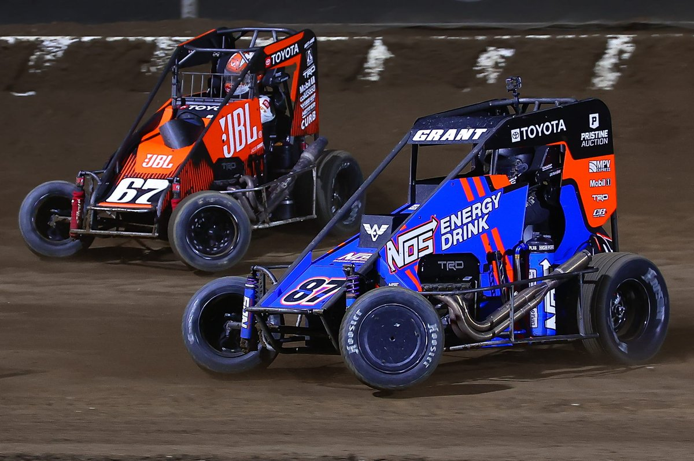

Terry Gray to Make Final Starts at USCS Flip Flop 50 at Riverside
The 16-time USCS national champion and 2022 Hall of Fame inductee, the current series points leader, says the Flip Flop 50 at West Memphis will be his last competition after a 52-year career. Source: Riverside International Speedway; USCS; photo: ASCS.
Read the story →Photo: ASCS
Latest racing news
Archive →High Limit Adopts Controlled Open Tire Rule for 2027
Teams will be able to choose between designated Hoosier Racing Tire and American Racer compounds at High Limit events next season, series founder Brad Sweet said. Source: High Limit Racing.
November 20, 2026 Race results · 410 SprintcarsLachlan McHugh Wins Australian Sprintcar Title Prelude at Toowoomba
McHugh beat Ryan Newton by 1.12 seconds in the crash-filled 35-lap Prelude to the Title, with Brock Hallett third. The Australian Sprintcar Championship follows Friday and Saturday. Source: Speedcafe.
November 19, 2026 Update · USAC National Midgets
Update · USAC National Midgets
Update: USAC Pushes Merced Midgets to Saturday After Friday Rainout
Wet grounds from heavy rain this week led Merced Speedway to use Friday, Nov. 20, to dry the quarter-mile track. The Chase Johnson Classic will be a Saturday, Nov. 21, tripleheader. Source: USAC; photo: Devin Mayo / USAC.
November 19, 2026 Driver news · POWRi 410Kalib Henry Joins Beaver Racing for 2027 POWRi 410 Season
The back-to-back All Star champion will drive the No. 12X Maxim with Don Ott Racing Engines for a full POWRi 410 season plus select World of Outlaws and High Limit races. Source: Kalib Henry Racing.
November 18, 2026 Race results · 360/LS Sprint CarsJack McCarthy Wins Murray Bridge 360/LS Track Championship Round 2
McCarthy started from the pole and led throughout Saturday at Murray Bridge Speedway. The 360/LS feature was declared on lap 22 because of a curfew. Tate Cowie finished second and Hayden Vickers third. Source: Murray Bridge Speedway.
November 18, 2026
Update · USAC National MidgetsUpdate: USAC Reschedules Plaza Park National Midget Debut for Nov. 23
The Good Earth Farms Special, postponed from Nov. 18 because of rain, will be run Monday night at Visalia, Calif. The 40-lap feature pays $5,000 to win. Source: USAC; photo: Josh James Artwork / USAC.
November 18, 2026 Schedule · High LimitHigh Limit Sets Freedom 251 Weekend at Mansfield Speedway for July 2-3, 2027
High Limit will run a Lucas Oil Late Model doubleheader Friday, July 2, and a $51,000-to-win program with fireworks Saturday, July 3, at Mansfield Speedway in Mansfield, Ohio. Source: High Limit Racing.
November 17, 2026 Driver news · World of Outlaws
Driver news · World of Outlaws
Rees Moran to Run Full-Time World of Outlaws Rookie Campaign With Greg Wheeler Motorsports in 2027
The 19-year-old from Tulsa, Oklahoma, has signed with Greg Wheeler Motorsports for a full-time 2027 rookie campaign. Source: World of Outlaws; photo: Tyler Carr / World of Outlaws.
November 17, 2026 Update · USAC National Midgets
Update · USAC National Midgets
USAC Postpones National Midget Debut at Plaza Park Raceway
Saturated grounds and more rain in the forecast called off the Nov. 18 race at Visalia, Calif. USAC and the track are working on a possible new date during the Golden State Invasion. Source: USAC; photo: Rich Forman / USAC.
November 17, 2026 People · USAC Sprint Cars
People · USAC Sprint Cars
Cy Fairchild, Michigan Racer and USAC Sprint Car Winner, Dies at 91
Fairchild won USAC sprint car features at New Bremen in 1969 and 1971 and was reported to have won more than 800 features from 1952 to about 1979. Source: USAC; photo: Fairchild Family / USAC.
November 17, 2026Showing stories from the last 7 days. More in the archive →
Upcoming race weekend
USAC National Midgets · Sat, Nov 21
Chase Johnson Classic, Merced Speedway
Friday’s Nov. 20 program at Merced was rained out. The Chase Johnson Classic is now a Saturday, Nov. 21, tripleheader with USAC National Midgets, USCS non-wing sprint cars and 360 winged sprint cars. Pits open at 11 a.m. PT and hot laps at 2 p.m. Source: USAC. Plaza Park Raceway is rescheduled for Monday, Nov. 23. The Australian Sprintcar Championship runs Nov. 20-21 at Toowoomba Speedway, and the USCS Flip Flop 50 runs Nov. 20-21 at Riverside International Speedway.
No events match those filters yet. Try another series or discipline.
Dates from the series and track schedules. Check the official sites for start times and any changes.
Latest results
- Sprintcar · Prelude to the Title · Wed, Nov 18Prelude to the Title, Toowoomba SpeedwayLachlan McHugh beat Ryan Newton by 1.12 seconds; Brock Hallett third. Source: Speedcafe.Full story →
- Sprint car · 360/LS · Sat, Nov 14360/LS Track Championship Round 2, Murray Bridge SpeedwayJack McCarthy started from the pole and led throughout before the feature was declared on lap 22 because of a curfew. Top 5: McCarthy, Tate Cowie, Hayden Vickers, Hilton Rowett, Brodie Somerfield.Full story →
- Sprint car · Southern Sprint Car Shootout · Sat, Nov 14Season finale, Citrus County SpeedwayColton Bettis won the 40-lap feature from 5th by 4.140 seconds and clinched his third straight series title. Top 5: Bettis, Daniel Miller, Larry Brazil Jr., Brian Gingras, Jim Childers.Full story →
- Sprint car · 360 Winged · Sat, Nov 14High Desert Nationals, Vado Speedway ParkCale Thomas won the 30-lap feature from 6th ($10,000). Top 5: Thomas, Caleb Saiz, Ashton Torgerson, Justin Sanders, J.J. Hickle.Full story →
- Sprint car · USAC Southwest · Sat, Nov 14USAC Southwest Sprint Cars, Central Arizona RacewayStevie Sussex won the 25-lap feature from 7th, leading laps 17-25. Top 5: Sussex, Charles Davis Jr., R.J. Johnson, Cameron La Rose, Dayton Shelton.Full story →
- Sprint car · 410 Sprint Cars · Sat, Nov 14York Excavating Sprint Showdown, BAPS Motor SpeedwayAnthony Macri won the 30-lap feature from the pole ($10,000). Top 5: Macri, Chase Dietz, Ryan Smith, Logan Rumsey, Dylan Norris. Dietz set fast time (13.835).Full story →
- Sprint car · World of Outlaws · Sat, Nov 7World Finals Finale, The Dirt Track at CharlotteCarson Macedo won the 25-lap feature from 8th ($25,000). Top 5: Macedo, Michael Kofoid, Giovanni Scelzi, Buddy Schweibinz, Steven Snyder Jr. Macedo led the final 9 laps. Chase Randall was the hard charger (+9).Full story →
- Sprint car · Sprint Car Challenge Tour · Sat, Nov 7Tribute to Gary Patterson, Stockton Dirt TrackD.J. Netto started second and won the finale. Top 5: Netto, Shane Golobic, Justyn Cox, Jake Morgan, Dylan Bloomfield. Cox clinched his second SCCT title. Officials shortened the feature to 25 laps.Full story →
- Sprint car · World of Outlaws · Fri, Nov 6World Finals Night 2 Feature, The Dirt Track at CharlotteGiovanni Scelzi led all 25 laps after passing polesitter Sheldon Haudenschild on the opening lap. Top 5: Scelzi, Tanner Holmes, Haudenschild, Cameron Smith, Buddy Schweibinz.Full story →
- Sprint car · World of Outlaws · Thu, Nov 5World Finals Night 1 Feature, The Dirt Track at CharlotteRico Abreu won the 25-lap feature from 3rd. Top 5: Abreu, Tyler Courtney, Bill Balog, Michael Kofoid, Garet Williamson. Williamson won the dash.Full story →
- Sprint car · World of Outlaws · Wed, Nov 4World Finals Qualifying, The Dirt Track at CharlotteRico Abreu swept both Simpson Quick Time awards (12.584 Thursday overall; 12.542 Friday Flight A). David Gravel topped Thursday Flight A (12.688); Sheldon Haudenschild led Friday Flight B (12.678).Full story →
- Sprint car · Trophy Cup · Sat, Oct 31Trophy Cup 32 Finale, Thunderbowl RacewayThorson won the 50-lap 410 A-main from 15th ($10,000). Landon Brooks finished 4th from 22nd to clinch the Trophy Cup 32 title ($30,000); Tanner Holmes won the Three Cup Challenge. Top 5: Thorson, Jett Barnes, Holmes, Brooks, Justin Peck.Full story →
- Sprint car · Trophy Cup · Fri, Oct 30Trophy Cup 32 Night 2, Thunderbowl RacewayTanner Thorson won the 30-lap 410 feature from 4th after leader Kaleb Montgomery lost power on the last lap. Daison Pursley second, D.J. Netto third.Full story →
- Sprint car · USAC East Coast · Fri, Oct 30Non-Winners Showdown, Bridgeport Motorsports ParkChelby Hinton won the 20-lap feature from 3rd for his first sprint car win. Kyle Spence second, Joe Kata third.Full story →
- Sprint car · Trophy Cup · Thu, Oct 29Trophy Cup 32 Night 1, Thunderbowl RacewayJustin Peck won the 30-lap 410 feature from 4th. Jace Park was second, Jake Andreotti third. Nights 2–3 on Oct 30–31.Full story →
- Sprint car · USAC · Sat, Oct 24Western World finale, Central Arizona RacewayGavin Miller won the 35-lap feature ($42,450), his second career USAC National Sprint win. Kevin Thomas Jr. was second, Justin Grant third.Full results via USAC →
- Sprint car · World of Outlaws · Sat, Oct 24Short Track Nationals, Texarkana 67 SpeedwayMichael Kofoid won the 40-lap feature on a late restart, his 17th win of 2026. Cole Macedo was second, Garet Williamson third.Full story →
- Sprint car · World of Outlaws · Fri, Oct 23Jason Johnson Classic, Texarkana 67 SpeedwayCarson Macedo won the 41-lap feature. David Gravel was second, Sheldon Haudenschild third.Full story →
- Sprint car · High Limit · Sat, Oct 17Season finale, Texas Motor Speedway dirtGiovanni Scelzi led all 30 laps and beat Rico Abreu by 0.202 seconds. Abreu clinched the series title.Full results via Speed Sport →
- Sprint car · USAC · Sat, Oct 17Bomb City 40, Route 66 Motor SpeedwayGavin Miller led all 40 laps. Cale Coons was second, Justin Grant third.Full results via USAC →
- Sprint car · All Star Circuit of Champions · Sat, Oct 3Frank & Marilyn Benic Memorial (season finale), Michaels Mercer RacewayA.J. Flick won the 35-lap feature from ninth ($11,000). Kalib Henry finished second to clinch his second straight All Stars title. Top 5: Flick, Henry, Zane DeVault, Dale Blaney, Cale Thomas.Full results via Speed Sport →
Wing sprint cars
Section →Scelzi wins Texas finale, Abreu clinches High Limit title
- Nov 20: High Limit adopts controlled open tire rule for 2027
- Nov 20: Terry Gray to make final starts at USCS Flip Flop 50 at Riverside
- Nov 19: Lachlan McHugh wins Australian Sprintcar title prelude at Toowoomba
- Nov 18: Kalib Henry joins Beaver Racing for 2027 POWRi 410 season
- Nov 18: Jack McCarthy wins Murray Bridge 360/LS Track Championship Round 2
- Nov 17: High Limit sets Freedom 251 weekend at Mansfield Speedway for July 2-3, 2027
- Nov 17: Rees Moran to run full-time World of Outlaws rookie campaign with Greg Wheeler Motorsports in 2027
- Nov 16: Colton Bettis wins Southern Sprint Car Shootout Series finale and third straight title
- Nov 16: Cale Thomas wins $10,000 High Desert Nationals at Vado Speedway Park
- Nov 15: Anthony Macri wins York Excavating Sprint Showdown at BAPS Motor Speedway
- Nov 15: Brady Bacon to run full-time High Limit schedule with Vermeer Motorsports in 2027
Midgets
Section →Keith Kunz Motorsports to close after 2026 season
- Nov 19: USAC pushes Merced midgets to Saturday after Friday rainout
- Nov 18: USAC reschedules Plaza Park National Midget debut for Nov. 23
- Nov 17: USAC postpones National Midget debut at Plaza Park Raceway
- Nov 15: Leo Francis retires after 21 years with POWRi
- Nov 15: This week: Jacob Denney leads USAC National Midgets into Plaza Park and Merced
- Nov 13: USAC Night of Champions set for Dec. 11 in Indianapolis
- Nov 12: Storms cancel Hangtown 100 at Placerville; USAC midgets resume Nov. 18 at Plaza Park
- Nov 12: Jacob Denney leads USAC National Midgets into five-race California finish
- Nov 12: Kale Drake wins 2026 POWRi National Midget League championship
- Nov 12: IndyCar winner Christian Rasmussen to make USAC midget debut at Turkey Night
Non-wing sprint cars
Section →R.J. Johnson wins third straight USAC CRA Sprint Car title
- Nov 17: Cy Fairchild, Michigan racer and USAC sprint car winner, dies at 91
- Nov 16: Stevie Sussex wins USAC Southwest Sprint Car feature at Central Arizona Raceway
- Nov 15: This week: Jacob Denney leads USAC National Midgets into Plaza Park and Merced
- Nov 13: USAC Night of Champions set for Dec. 11 in Indianapolis
- Nov 12: Kyle Cummins wins second straight USAC National Sprint Car title
- Nov 10: Steven Drevicki wins sixth USAC East Coast Sprint Car title
- Nov 10: Jack Wagner wins 2026 USAC Wholesale Batteries MRA Sprint Car title
- Nov 9: Kaylee Bryson out at Abacus; team says it will be back in 2027
- Nov 8: Kody Swanson wins non-winged feature at Open Wheel Showdown
- Nov 6: Kyle Cummins seeking ownership partners for 2027 USAC return
This Day in History
Full archive →Past races and milestones on today’s date. History only; current news is above.
- Nov. 4, 1998 · World of OutlawsMark Kinser Wins Channellock Fall Classic at Las Vegas
- Nov. 4, 1945 · BirthdayKenny Weld Is Born in Kansas City
- See every date in This Day in History →
Racing links
Sites, shows and channels we follow. Not affiliated with us.About
I’ve been obsessed with sprint cars my whole life. I have the pictures to prove it: me in a diaper, “working” on a sprint car.
I’ve worked on them, traveled with them, and I’ve been to more races than I can count over the last four decades.
DirtSprintCars.com is independent. I built it to help feed my obsession, help people get good info quickly, and hopefully help the sprint car community grow: more eyes on the racing, the drivers, the teams and the people who keep it going every weekend.
And yes, I know midgets aren’t exactly sprint cars. I like them too, so deal with it.
Write or shoot for us
This sport is bigger than one guy with a website. If you write, take photos or shoot video, I want to hear from you.
Race recaps, driver features, track stories, photo galleries, local short-track coverage. Tell me what you do and send a link to your work. I’ll get back to you.
Tear Off Weekly
A quick roundup of dirt sprint car and midget racing news, results, schedules and stories worth following.
Race-night gear
Buying guides and original DirtSprintCars.com merchandise. Affiliate links are always disclosed.